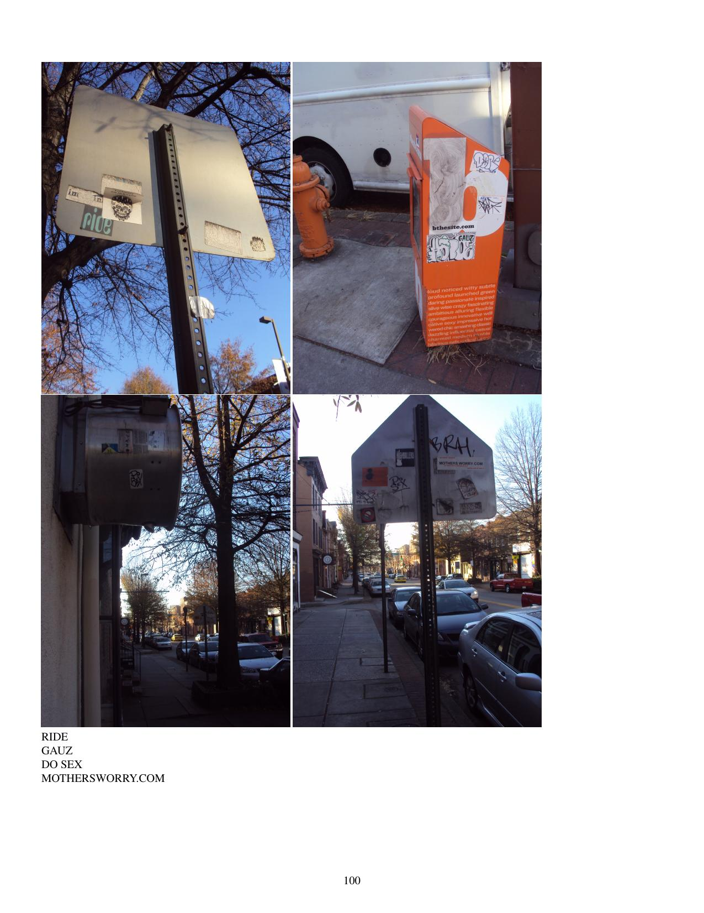

The holidays begin. Footprints. Scenes from Canton. Faded sensations. Guerrilla knitting. Greektown and Highlandtown. More counterfeit 7-11s. Rough looking pumpkins and fresh snowmen. Christmas village. Streetcar museum. Falls Road. To Hampden the back way. Yard cows. Storm drains. Church signs.
Includes:
Random sample page:
